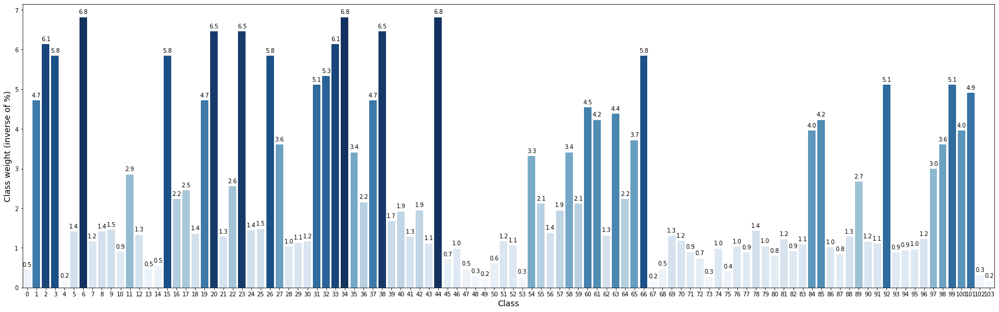
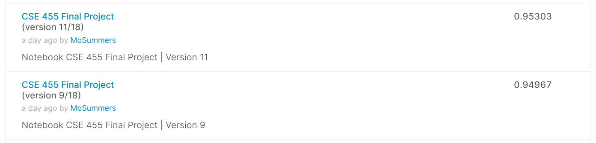
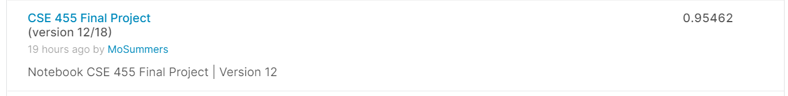

Summary
we competed in a Kaggle competition[1] to develop a classifier that classifies 104 types of flowers. We started with provided code using a convolution neural net (CNN) architecture called VGG16 to train the model with transfer training, and deployed seven different significant modifications to increase the performance of the classifier:
Click to go to specific modification- Modification 1: Train with other models
- Modification 2: Calculate weights
- Modification 3: Change optimizers
- Modification 4: Mix models
- Modification 5: Augment images
- Modification 6: Increase EPOCHS
- Modification 7: Incorporate external data
We compare the models based on their f1-score, precision, and recall on their predictions on the validation set. Our best model is a combination of Xception and EfficientNet architecture, with extra training data and images augmented with random blocking. The starter code has a score of 0.04083, while our best model got a score of 0.95901, which places us in 24th on the leaderboard. We also discuss the challenges and takeaways towards the end of this report.
For a video summary of this project, please see below. A detailed video walk-through is also available here.
[Insert YouTube Video Frame]
Source code for our best model is in this Jupyter Notebook or in this Kaggle Notebook here. Different versions of the notebook shows our various modifications. We also recorded intermediate epoch records and experiments for reference here.
Motivation & Setup
There are a lot of species in nature, for over 5,000 species of mammals, 10,000 species of birds, and 30,000 species of fish. How about some plants? Well, we have over 400,000 different types of flowers! Incredible! For this competition, each team is challenged to build a machine learning model that identifies the type of flowers in a dataset of images. The good news is, we will have just over 100 types, so the work is easier.
Our project builds upon Ryan's notebook [2] on how to build an image classifier in Keras and train it on Tensor Processing Unit (TPU). We then expand from there to train with other models and techniques with ideas of our own.
A TPU[3] has eight different cores, and each of these cores acts as its own accelerator. A TPU is sort of like having eight GPUs on one machine. We used TPUs for this challenge because these are equipped with 128 GB high-speed memory, so even with 512x512 pixels input images (provided in the dataset as well), TPU can handle these properly.
Dataset
The Kaggle competition provides data[4] in TFRecords[5] format, which fits well into TPUs. We have:
- train/*.tfrec - training samples, including labels.
- val/*.tfrec - pre-split training samples w/ labels intended to help with checking your model's performance on TPU. The split was stratified across labels.
- test/*.tfrec - samples without labels - we'll be predicting what classes of flowers these fall into.
- sample_submission.csv - a sample submission file in the correct format
In one of the modifications, we add extra data to the training dataset to better train our classifier. More on it in the next section.
Techniques & Evaluations
Now we're ready to create a neural network for classifying images! We'll use what's known as transfer learning. With transfer learning, we reuse part of a pre-trained model to get a head-start on a new dataset.
For the starter code, it uses a model called VGG16 (pre-trained on ImageNet[6]). However, the accuracy on the validation set is only about 22%, which is far below what we want. Let us try other models to make it better.
Before making the final predictions on the test set, it's a good idea to evaluate model's predictions on the validation set. This can help diagnose problems in training or suggest ways the model could be improved. We'll look at two common ways of validation: plotting the confusion matrix and visual validation. A confusion matrix shows the actual class of an image tabulated against its predicted class. It is one of the best tools for evaluating the performance of a classifier. It can also be helpful to look at some examples from the validation set and see what class the model predicted. This can help reveal patterns in the kinds of images the model has trouble with.
🔔 Modification 1: Train with Other Models
We want to experiment with other models included with Keras.
We start simple. We stick with VGG16 for now, but we would like to change the trainable attribute so that it unfreezes the layers and keep changing the values[7]. After training, we do see slight improvements and the accuracy of the validation set goes from 22% to 26%. We decided to move on with Trainable=True for now with other models.
We then continue to train with VGG19, Xception, DenseNet201, EfficientNetB7, InceptionV3, MobileNetV3Small, NASNetMobile and ResNet152V2.
Some of these models perform worse than VGG16, such as VGG 19 (15.17% accuracy on validation set), while others do have notable improvements. Let's do a quick comparisons for models that perform with an accuracy higher than 85% on validation set:
| # | Model | F1 | Precision | Recall |
|---|---|---|---|---|
| 1 | Xception | 0.936 | 0.944 | 0.932 |
| 2 | DenseNet201s | 0.942 | 0.944 | 0.944 |
| 3 | EfficientNetB7 with weights = 'imagenet' | 0.895 | 0.901 | 0.895 |
One thing to note is that when we were experimenting with our ⚖️ Modification 2, we came across a blog saying how the performance can be improved if we changed the value assigned to the weights attribute. Unfortunately, the Keras library does not support 'noisy-student' weights. So we need to import efficientNet and go from there. The accuracy improved a lot (from 90% to 95%) by changing the weights from ‘imagenet’ to ‘noisy-student’! It seems like noisy-student is a better weight to be used for EfficientNetB7. We will use it from now on.
⚖️ Modification 2: Calculate Weights
For this modification, the idea is to adjust the weights to "pay more attention" to the under-represented classes that only have a small amount of available samples.
Inside model.fit(), there is an attribute called class_weight[8]. This attribute is an "optional dictionary mapping class indices (integers) to a weight (float) value, used for weighting the loss function (during training only)". It is set up for classification on imbalanced data[9].
Maybe we can customize this attribute? Let us start by calculating the percentage of each class presented in the training dataset. Here is a graph that show the different weights – an inverse of percentage:
 Class Weights (inverse of %)We pick the models that perform pretty well in the last round: Xception(), DenseNet201(), EfficientNetB7(), Inception2(), and RasNet152V2(), and train these with class weights.
history = model.fit(
ds_train,
validation_data=ds_valid,
epochs=EPOCHS,
steps_per_epoch=STEPS_PER_EPOCH,
callbacks=[lr_callback],
# modification 2: class weights (abandoned because no improvements)
class_weight = training_class_weights
)
Another quick comparison on f1, precision, and recall (before -> after applying class weights):
- Xception(): f1 = 0.936 -> 0.941, precision = 0.944 -> 0.940, recall = 0.932 -> 0.946
- DenseNet201(): f1 = 0.942 -> 0.935, precision = 0.944 -> 0.931, recall = 0.944 -> 0.944
- EfficientNetB7() with weights = 'imagenet': f1 = 0.895 -> 0.901, precision = 0.901 -> 0.894, recall = 0.895 -> 0.914
- InceptionV3(): f1 = 0.925 -> 0.907, precision = 0.930 -> 0.899, recall = 0.926 -> 0.922
- RasNet152V2(): f1 = 0.898 -> 0.812, precision = 0.912 -> 0.801, recall = 0.891 -> 0.893
- EfficientNetB7() with weights = 'noisy-student': f1 = 0.949 -> 0.941, 0.948 -> 0.932, 0.955 -> 0.955
From the results, we do not see significant improvement with customized weights. Therefore, we are not going to use training_class_weights in future iterations.
We also decide to remove EfficientNetB7() with weights = 'imagenet', InceptionV3() and RasNet152V2() from the list of usable models because their accuracy is the relatively low among all in both rounds now.
🚀 Modification 3: Change Optimizers
How about optimizers? What are some optimizers that are available and maybe have a better performance? Because we do have time limitation on running with TPUs, we cannot train on every model that we found in the first modifications. We will start with Xception() for now because of its faster runtime among all models with relatively high accuracy.
Before we get started exploring, there is some notes on choosing the optimizers. Even though we have decided to not continue with training with class weights calculated from training dataset, there is still some facts we found out about our data. Namely, our dataset is imbalanced. So it is possible that some optimizers will perform worse than Adam (in the starter code), which is okay because we can always go back to it. But let's start experimenting first:
model.compile(
optimizer='adam',
# optimizer = 'Adadelta',
# optimizer = 'Adagrad',
# optimizer = 'Adamax',
# optimizer = 'Ftrl',
# optimizer = 'Nadam',
# optimizer = 'RMSprop',
# optimizer = 'SGD',
loss = 'sparse_categorical_crossentropy',
metrics=['sparse_categorical_accuracy'],
)
Again, let's do a comparison of the optimizers with relatively high accuracy on validation set:
- Adam: f1 = 0.936, precision = 0.944, recall = 0.932
- Adamax: f1 = 0.921, precision = 0.933, recall = 0.918
- Nadam: f1 = 0.937, precision = 0.942, recall = 0.936
- RMSprop: f1 = 0.937, precision = 0.941, recall = 0.937
The improvements by changing the optimizers is not significant either. Since we cannot predict how the optimizers will perform on DenseNet201() and EfficientNetB7(), we will stick with Adam, which we know for sure that have a good performance on the other two models.
🎨 Modification 4: Mix Models
We want to try out mix and match models together. We have reduced our models to 3 now (Xception(), DenseNet201(), and EfficientNetB7()), so there will be 2! = 3 combinations of models. We examine each pair, and compare their performance.
We need to build and train each model separately first, which is the same code we have been using for modification 1. Next, we need to find the best_alpha to set the weight between the two models. We adapted the code from this notebook on how to calculate the alpha that works the best.
Let's do another round of comparisons on these three combinations:
- Xception() + DenseNet201(): f1 = 0.95, precision = 0.952, recall = 0.952
- Xception() + EfficientNetB7(): f1 = 0.961, precision = 0.962, recall = 0.962
- DenseNet201() + EfficientNetB7(): f1 = 0.956, precision = 0.954, recall = 0.960
Seems like the Xception() + EfficientNetB7() performs the best. Let's submit that! Indeed, the combination of Xception() and EfficientNetB7() gives us the best result we have so far in the competition -- a score of 0.95303!
As for reference, the score by submitting DenseNet201() + EfficientNetB7() is 0.94967, which is also pretty good, but not as big as an improvement compared to the combination above: Xception() + EfficientNetB7(). We will stick with this combo for now.
 Submission Scores after Modification 4🚧 Modification 5: Augment Images
In the provided starter code, only one simple data augmentation is done, which is to flip the image horizontally. We encounter two interesting image augmentations, which both involve some randomness. Not exactly sure the theory behind it, but it can be effective. Let's test it out.
Random Blockout
The idea is to erase or block out a portion of the training images. Code adapted from Dmitry's notebook, and here is an illustration:
Random Modifications to Images
This augmentation randomly make changes to the images, such as resize, crop, reset brightness, reset saturation, reset contract, blur, etc. Adapted from Xuanzhi Huang and Rahul Paul's notebook:
Here are the statistics on validation set:
- random blocking: f1 = 0.960, precision = 0.961, recall = 0.963
- random changing: f1 = 0.791, precision = 0.844, recall = 0.781
So randomly changing the pictures decreases the accuracy significantly, but blocking some parts of the training images does help improve the accuracy a little bit. We will keep that since it does give us better results when submitted to the competition -- 0.95462!
 Submission Score after Random Blocking📈 Modification 6: Increase EPOCHS
In the starter code, the number of EPOCHS is set to 12. We stick with 12 for most iterations so far because if we try more EPOCHS, the time needed to train will increase.
Since Kaggle has a limitation on 20 hours of TPUs/week, we do not want to spend too much time on "picking the models" round. Now we are kinda happy with what we get so far, let's try to increase that EPOCHS number to 20.
Let's do a quick comparisons on the validation set evaluations (same combo are used Xception() + EfficientNetB7()):
- 12 EPOCHS: f1 = 0.961, precision = 0.962, recall = 0.962
- 20 EPOCHS: f1 = 0.959, precision = 0.960, recall = 0.961
The score submitted to the competition does not change a lot either; it even goes down a bit from 0.95462 to 0.95417. Hence, we will switch back to 12 EPOCHS.
💽 Modification 7: Incorporate External Data
One of the top-rated notebooks mentions how using external data can increase the model’s accuracy. This makes a lot of sense theoretically since with more training data, we can refine the classifier. So let’s add in more data!
Original dataset has12753 training images, 3712 validation images, 7382 unlabeled test images. With this extra training dataset, we have 68094 training images, 3712 validation images, 7382 unlabeled test images
That is a lot of new data added! We go from 12k to 68k now. The time for training for sure is going to go up. But it is worth it because the evaluations and the scores are good:
Submissions
In the end, after exhausting all the TPU quotas we have, we made 7 submissions to the competitions:
- Version 1: Starter code, score 0.04083
- Version 3: DenseNet201(), score 0.94145
- Version 9: mix DenseNet201() + EfficientNetB7('noisy-student'), score 0.94967
- Version 11: mix Xception() + EfficientNetB7('noisy-student'), score 0.95303
- Version 12: random blocking + version 11, score 0.95462
- Version 15: 20 EPOCHS + version 12, score 0.95417
- Version 18: extra training data + version 12, score 0.95901
🥇 Potential Modification 8: Find Best Optimizer for Each Model
In 🚀 Modification 3, we experiment with different optimizers on Xception() model and use the result as a general rule for other models as well. This may not be true, though. If time allows, we will also figure out the best optimizer for each of Xception(), DenseNet201() and EfficientNetB7() architectures. Unfortunately, we are running out of our TPU quotas, so we cannot test it out at this point.
Challenges & Takeaways
Overall, it is a fun time to work on the project, and the sense of accomplishment is huge when we see our place goes from 140 to 25 on the leaderboard. But there are some challenges presented as well. The biggest challenge is that the TPU usage has a time limitation, so we need to give up some potential improvements to train the models within the time frame, and have to turn off the TPU when we are writing code instead of running it.
Another challenge is picking the right models. In the Keras library, there are a lot of models that we did not get to explore in modification 1. We only get to choose 10 architectures, so the strategy we used is to search for papers that do some comparisons. As an example, for ResNet, a powerful deep neural network idea, there are 8 different models provided. According to this paper on ResNet, seems like ResNet-152 has the least top-1 and top-5 error rates compared to other shallower ResNet models (such as ResNet50 or ResNet101) for classification on Imagenet validation. Hence, we use ResNet152V2() instead of others.
Throughout this project, we learned about a lot of commonly used architectures, optimizers, and data augmentation strategies. We also gained a lot more experience working with images and transfer training neural networks. It was a lot of fun to read and discuss ideas with other teams on Kaggle. This is the first time we did a competition on Kaggle, and it was definitely worth the time and effort we put in.
Future work on this project may include exploring other network architectures, trying out various optimizers for each architecture, and exploring other data augmentation ideas that do not involve so much randomness. We had a great time working on this project and are excited to explore more in the field of computer vision!